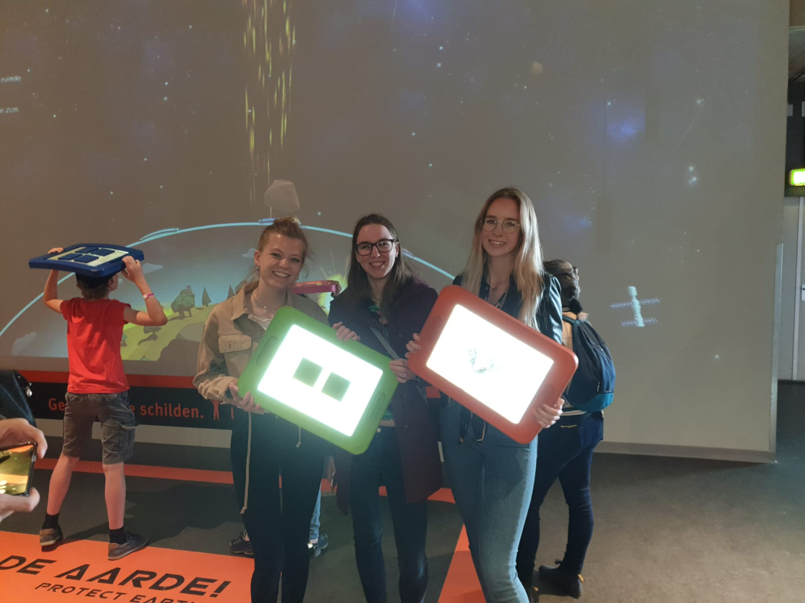
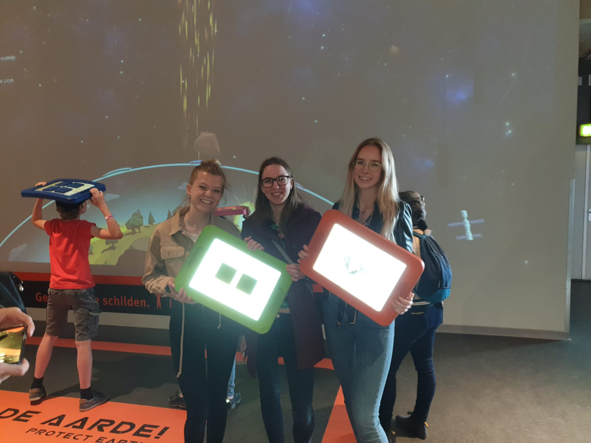

Excursion
Assignment
Tijdens de excursie naar NEMO Science Museum, wordt er een installatie uitgekozen die technologisch het meest interessant is. Hier wordt een stukje geschreven over de installatie, hoe deze werkt en welke sensoren etc. worden gebruikt.
NEMO heeft op dit moment de tentoonstelling “Leven in het heelal”. Je gaat hier op ontdekkingsreis naar de verste uithoeken van het heelal. Bij deze tentoonstelling horen meerdere installaties, zoals de installatie “Bescherm de Aarde”. Dit is de gekozen installatie voor deze opdracht.
De “Bescherm de Aarde” installatie is een spel, waarbij de gebruiker de dampkring is. Er vallen meteorieten, UV-straling en zonnewinden uit het heelal op aarde. Deze objecten kunnen worden tegengehouden door schilden op de juiste plek te houden tijdens het spelen van het spel. Door samen te werken zorgt de gebruiker er zo voor dat het leven op aarde mogelijk blijft. De dampkring wordt dikker gemaakt op die plek. Als meteorieten, UV-straling en zonnewinden toch door de dampkring heen komen en vallen op de aarde, wordt de aarde niet meer leefbaar en een vuurbal.
Het doel van deze installatie is het leren van kinderen dat de dampkring niet dunner moet worden, want dan is de aarde niet goed beschermd. Dit wordt op een speelse manier laten zien.
De installatie is een playful interaction, die door middel van schilden vast te houden op de juiste plek een interactie geeft met een wandvullende projectie op de muur. Deze projectie is 7 meter hoog. De schilden hebben reflecterend materiaal op zich met blokken zonder reflecterend materiaal. Zo weet het systeem welk bord waar is. Het reflecterende materiaal wordt opgevangen door een apparaat dat boven de installatie hangt. Het bord moet zo recht mogelijk boven het hoofd worden gehouden, anders valt het bord nog weleens weg van het scherm.
Ik vind deze installatie interessant, omdat er iets belangrijks op een leuke manier wordt verteld aan kinderen. Verder zag je bij de installatie, dat kinderen gelijk wisten wat ze moesten doen. Ze pakten een schild en zagen dat terugkomen op het scherm. Uiteindelijk is dit een oud spel, wat iedereen begrijpt en leuk vind. De installatie laat de gebruiker toch een soort opgaan in het spel, omdat je een schild wordt in de projectie. Dit is interessant, omdat het spel er levendiger van wordt.
Foto's van de installatie.

 

Reflect
?